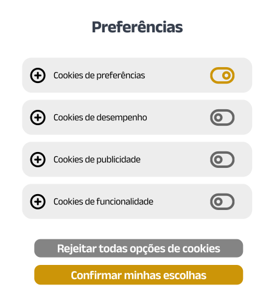

O que é a LGPD?
A Lei Geral de Proteção de Dados foi criada para o contexto brasileiro em 2018, é proposta para estabelecer princípios, direitos e obrigações relacionados a utilização de dados pessoais.
Princípios da LGPD para o tratamento de dados:
- finalidade
- livre acesso
- segurança
- prestação de contas
- adequação
- transparência
- prevenção da não discriminação
- necessidade
- qualidade dos dados
- responsabilização
Preferências

Apenas deixe o usuário escolher